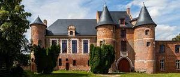
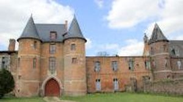
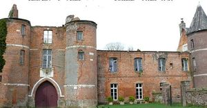
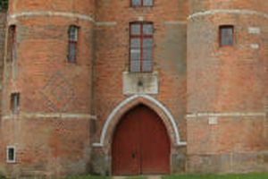
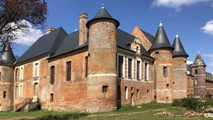
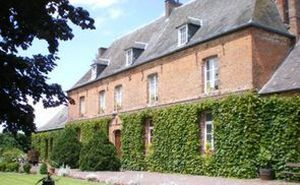

Recensement Jean-Claude Truffet
| Département | 80 — Somme |
| Canton | Poix-de-Picardie |
| Commune | Beaucamps |
| Type d'édifice | Château |
| Période d'origine | XIV-XVI |
| Coordonnées GPS | 49° 49' 3,11" Nord, 1° 46' 16,77" Est |






BEAUCAMPS, c'est au XIVe siècle qu'est attestée la première mention de la maison seigneuriale de Beaucamps. En 1539, Anne de Pisseleu, duchesse d'Etampes, favorite du roi François 1er, acquière le fief. Elle aurait entrepris la construction de la demeure l'actuelle en 1537 et achevée en 1574. Des transformations marquent le château au cours du XVIIIe siècle. Il s'agit de la reconstruction ou réparation de l'aile des étables et bergeries, qui ferme la cour à l'est et qui porte la date de 1771. Le château, acquis par l'Evêché d'Amiens, est occupé dans les années 1960-1970, par une colonie de vacances avant d'être racheté en 1975, par la famille Richard, antiquaires. Cette dernière, après avoir pillé les biens du château, revend la demeure à une Sté britannique qui souhaitait y créer un complexe hôtelier, mais fait faillite avant de commencer la rénovation de la demeure. La "communauté des Emmaüs" s'établit dans les lieux vers 1985 et achève de démonter ce qui reste du monument. Depuis le 13 mai 2000, M. et Mme Sylla se sont portés acquéreur du château, et ont commencé quelques travaux de nettoyage, de défrichage qui devraient permettre de sauver le bâtiment.Éléments protégés MH : les façades et les toitures du château et des deux porteries : classement par arrêté du 3 juillet 2003. NEUVILLE à Coppegueule, village voisin le corps de bâtiment principal rectangulaire en briques à soubassement de grès est daté de 1659 par ancrage. Il est prolongé par deux ailes symétriques à niveau unique au début du XIXe siècle. Toiture en croupe recouverte d'ardoises, belle charpente peut-être originelle, façade principale a appareillage losange et briques, colombier isolé au centre de la cour, en ardoise et brique avec enduits de chaux blanche. Éléments protégés MH : les façades et les toitures des bâtiments suivants : le manoir proprement dit, y compris les ailes ajoutées au XIXe siècle ; le pigeonnier ; le bâtiment des communs fermant la cour au Sud-Est : inscription par arrêté du 16 février 1988.
a dix K.M. au nord ouest St-AUBIN-RIVIERE, il subsiste le bâtiment principal et les ailes latérales édifiés en brique et pierre sur des soubassements en grès et paraissant dater du XVIIe siècle ou peut-être de la fin du XVIe siècle. La façade sur jardin du corps de logis dont l'élévation est à deux étages, présente l'étrange particularité d'être sur une moitié en pierre et sur l'autre moitié en brique. Cette demeure a subi au cours des siècles, plusieurs remaniements. Ainsi l'aile, aujourd'hui surmontée d'un toit à la Mansart, était jusqu'au siècle dernier couverte d'un haut toit à double pente comme le sont l'autre aile et le corps de logis. Au-dessus de la porte du bâtiment des communs qui a été conservé, figurent, sur une pierre rapportée, les armoiries sous couronne de marquis et entourées de palmes, de la famille d'Auxy qui possèda le château aux XVIIe et XVIIIe siècles, Guy de Monceaux d'Auxy ayant épousé vers 1600, Suzanne de Soyécourt qui en était alors propriétaire. BEAUCAMPS, la construction de Beaucamp date de des XVIe, XVIIe, Le château de Beaucamps-le-Jeune est de style Renaissance. Construit en brique et pierre, il a été particulièrement dégradé au cours des siècles. La communauté des Lazaristes, propriétaire de l'édifice en 1920, fit rajouter une longue aile à l'Est de l'entrée du château. De nombreux motifs ont été réalisés en brique noire qui décorent les murs et les tours du château des Anges, un peu comme on les observe sur les églises fortifiées de la Thiérache. La restauration du Castel des Anges a été entreprise en 2017 et 2018. Une association de sauvegarde du château de Beaucamp s'est constituée et organise, chaque été, le 15 août, depuis 2009, une Fête médiévale, avec la participation d'une compagnie de fauconnerie équestre réputée, appelée l'Hippogriffe. Le château partiellement rénové, sert régulièrement de cadre à de nombreuses animations. Aujourd'hui, il est appelé le Castel des Anges.
Anne de Pisseleu, duchesse d'Etampes St-Aubin famille d'Auxy "
Beaucamps grav 1_à 5 et Neuville grav 6 et St-Aubin Rivière GPS : 49° 49' 3,11" Nord, 1° 46' 16,77" Est